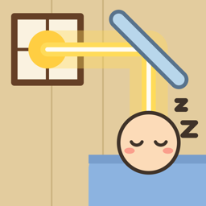

朝日で起こせ
朝日を鏡ではね返して、寝坊した家族を起こそう
朝日で起こせは、和室の畳に鏡を置いて、障子の窓から差しこむ朝日をはね返し、布団で寝坊している家族に当てて起こすパズルゲームです。光は鏡を置くたびにすぐ動くので、試しながらじっくり考えられます。
遊び方
- 畳のマスをタップすると鏡を置けます。もう一度タップすると向きが変わり、3 回目で取れます。
- 置ける鏡の数は面ごとに決まっています。ちょうどその数で、寝ている人全員に光を当てればクリアです。
- 光は人を通り抜け、たんすで止まります。ネジで留めてある鏡は動かせません。
- 章が進むと、光を半分通して 2 本に分ける鏡や、光を当てると泣いてしまう赤ちゃんが出てきます。全 4 章 48 面です。
よくある質問
- どうしても解けません。
- プレイ中の「ヒント」を押すと、広告のあとに、鏡を置くマスと向きを 1 枚分教えます。広告が読みこめないときも、ヒントは出ます。
- 最初からやり直したい。
- プレイ中の右上の矢印のボタンで、置いた鏡をすべて片付けられます。
- 赤ちゃんが泣いてしまいました。
- 赤ちゃんに光が当たっているあいだは解けません。鏡の向きを変えて、赤ちゃんをよけて光を通してください。
- 広告の設定を変えたい。
- 広告に関する同意が必要な地域（欧州経済領域、英国、スイス）では、タイトル画面の「広告の設定」から変えられます。トラッキングの許可は、iPhone の「設定」>「プライバシーとセキュリティ」>「トラッキング」でいつでも変えられます。許可しなくても、すべての機能を使えます。
- 機種変更で記録を引き継げますか。
- 解いた面の記録は iPhone の中だけに保存しています。iCloud またはパソコンで iPhone 全体をバックアップ・復元した場合は引き継がれます。アプリを削除すると記録は消え、元に戻せません。
- 通信できない場所でも遊べますか。
- はい。ゲームは通信なしで遊べます。通信できないときは広告が表示されません。
動作環境
- iPhone、iOS 17 以降
- 縦向きのみ
お問い合わせ
不具合の報告やご要望は、kazuma09201101@icloud.comまでお送りください。お使いの iPhone の機種と iOS のバージョンを添えていただくと、原因を調べやすくなります。個人で開発しているため、お返事に時間がかかることがあります。